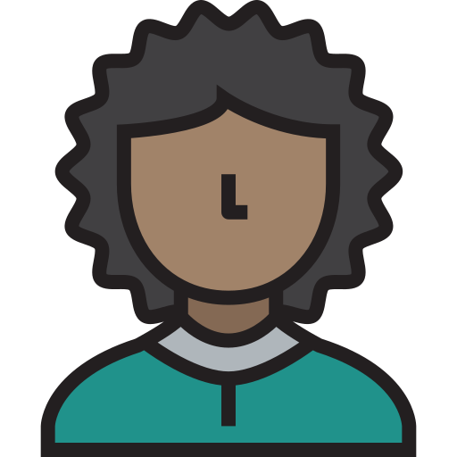

<ion-content [fullscreen]="true">
  <div *ngIf="spinnerShow" style="font-size: 24px; position: absolute; top: 0; left: 0; z-index: 9999; background-color: #c8c7c5c4; width: 100%; height: 100%; display: flex; justify-content: center; align-items: center; color: gray">
    Cargando <ion-spinner color="light"></ion-spinner>
  </div>  
  <ion-title style="text-align: center; margin-top: 2.5rem; color: gray; text-decoration: underline; font-size: 24px;">
    Carga de credito
  </ion-title>
  <div *ngIf="toast">
    <div style="background-color: rgb(91 156 218);color: white;width: 80%; padding: 2%; border-radius: 10px;
    position: absolute; top: 5%; left: 10%; font-size: 14px; z-index: 999999; text-align: center;">{{mensaje}}</div>
  </div>
  <div style="display: grid; justify-content: start; margin-top: 4rem;">
    <div style="display: grid; justify-content: start; background-color: #c8c7c5; border-radius: 0 50px 0 0; width: 85vw; padding: 25px 0;">
      <label style=" font-size: 18px; color: gray;">Correo electrónico</label>
      <input type="email" style="width: 70vw; margin-top: 0.5rem; border: none; border-radius: 0 20px 20px 0; padding: 1rem;color: gray; background-color: #eddcc8;" [(ngModel)]='user.email'>
    </div>
  </div>
  <div style="display: grid; justify-content: start;">
    <div style="display: grid; justify-content: start; background-color: #c8c7c5; border-radius:  0 0 50px 0; width: 85vw; padding: 25px 0;">
      <label style="color: gray; font-size: 18px;">Contraseña</label>
      <input type="password" style="width: 70vw; margin-top: 0.5rem; border: none; border-radius: 0 20px 20px 0; padding: 1rem;color: gray; background-color: #eddcc8;" [(ngModel)]='user.password'>
    </div>
  </div>
  <div style="display: flex; justify-content: center; margin: 2rem 0;">
    <button style="padding: 12px; font-size: 25px; border-radius: 50px; display: flex; justify-content: center; align-items: center;
      background-color: rgb(91 156 218); color: white; box-shadow: 1px 2px 15px " (click)="loginWithValidation()"><svg xmlns="http://www.w3.org/2000/svg" width="24" height="24" fill="currentColor" class="bi bi-arrow-right-short" viewBox="0 0 16 16">
      <path fill-rule="evenodd" d="M4 8a.5.5 0 0 1 .5-.5h5.793L8.146 5.354a.5.5 0 1 1 .708-.708l3 3a.5.5 0 0 1 0 .708l-3 3a.5.5 0 0 1-.708-.708L10.293 8.5H4.5A.5.5 0 0 1 4 8z"/>
      </svg></button>
  </div>
  <div style="display: flex; justify-content: space-evenly; margin: 3rem 0;">
    <a (click)="userAutocomplete('valentino@gmail.com','123456')" class="customALogin" style="border-radius: 50%; width: 24%; display: grid;
     justify-content: center; align-items: center; background-color: transparent; color: gray; font-weight: bold; text-align: center;">
      
      Valentino
    </a>
    <a (click)="userAutocomplete('thiago@gmail.com','000000')" class="customALogin" style="border-radius: 50%; width: 25%; display: grid; 
    justify-content: center; align-items: center; background-color: transparent; color: gray; font-weight: bold; text-align: center;">
      
      Thiago (admin)
    </a>
    <a (click)="userAutocomplete('lili@gmail.com','654321')" class="customALogin" style="border-radius: 50%; width: 24%; display: grid;
     justify-content: center; align-items: center; background-color: transparent; color: gray; font-weight: bold; text-align: center;">
      
      Lili
    </a>
  </div>
  <!-- <div style="width: 90%; height: 50%; background-color: rgba(172, 255, 47, 0.829); position: absolute;
  z-index: -1; border-radius: 0 50% 50% 0; rotate: 45deg; top: -2rem; right: 10rem"> </div>
   <div style="width: 80%; height: 35%; background-color: rgb(245 169 52 / 84%); position: absolute;
   z-index: -1; border-radius: 50% 0 0 50%; rotate: 20deg; bottom: 3rem; left: 10rem"> </div> -->
<ion-footer style="position: absolute; bottom: 10px; display: flex; justify-content: start; color: gray;">by Lucía Cardozo PPS 4°B</ion-footer>
</ion-content>


